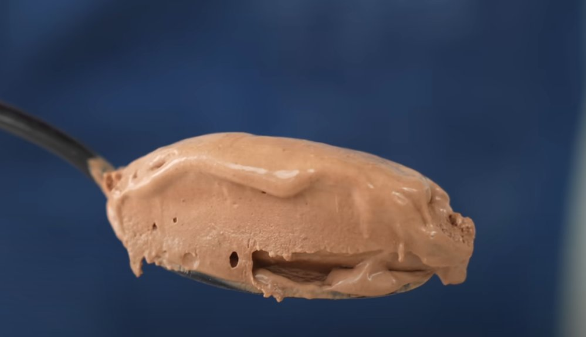

Chocolate Ice Cream

Description
This recipe creates a luxorious chocolate ice cream using the Ninja Creami ice cream maker.
Ingredients
- 2 cups and 1 Tbsp heavy cream
- 1 cup whole milk
- 1/2 cup dark chocolate chips (70% cacao)
- 6 large egg yolks
- 1/3 cup and 1 Tbsp sugar
- 1/3 cup cocoa powder (half regular, half Dutch-processed)
- Small pinch salt
- 2 tsp vanilla bean paste OR 3/4 tsp vanilla extract
Steps
- In a saucepan, heat cream and milk to 185–190°F. Remove from heat and stir in chocolate chips until fully melted.
- In a bowl, combine egg yolks, sugar, cocoa powder, salt, and vanilla. Whisk until smooth.
- Temper the yolk mixture with a few ladles of the hot chocolate mixture while whisking. Once half the dairy is added, pour in the rest while whisking.
- Return everything to the saucepan and cook over medium-low heat, stirring constantly with a rubber spatula until it thickens and reaches 192–195°F.
- Transfer the custard to a bowl to stop the cooking process. Chill uncovered in the fridge for 30 minutes.
- Pour into Ninja Creami pints or silicone ice cube trays and freeze until solid, at least 24 hours.
Back to main page